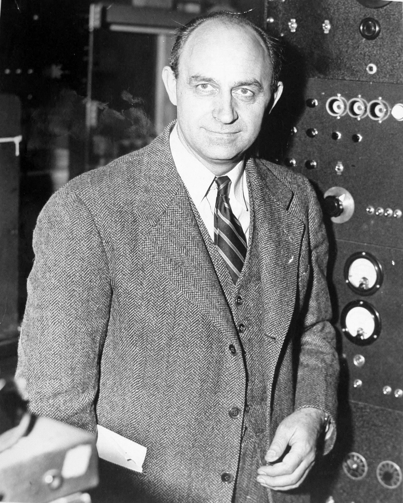

I’ve gotten a mini-surge of new subscribers lately, so I thought I should recap to put this installment in context.
Nearly a year ago, I released an installment called “The Only Solution” 1 .
In that installment, I provided a concise problem statement developed over the preceding installments:
-
The increase in carbon dioxide levels in the atmosphere, attributable to human extraction and combustion of geologic carbon over 350 years of industrialization, threatens to destabilize Earth’s climates.
I then provided a logical and technoeconomically viable path to the “only solution”, at least the only one visble at the time.
-
To solve this problem, we must reduce the quantity of already-emitted carbon dioxide, not simply reduce the rate of its increase by “decarbonization”.
-
Removing carbon dioxide from the air using any direct engineering approach is prohibitively expensive, even if only energy costs are included.
-
Photosynthesis is the only process that creates economic value from carbon dioxide because it uses (free) sunlight as its energy source.
-
Increasing Earth’s capacity for photosynthesis is a serious geoengineering challenge.
-
The most direct approach is to produce irrigation water from ocean water—Earth has enough of both land and water so that any system can scale.
-
The energy required for the process must also come from carbon-free sources. Our only plausible choice is nuclear energy, and we must hit a cost target of less than $300 per acre-foot of irrigation water.
Subsequent installments showed that this solution could be implemented globally with current technologies. Importantly, it is likely that it can be profitable if designed by engineers tasked with reducing costs. If you’re curious about the logical path, I suggest you refer to the archive.
Now, we’re exploring a different approach, semi-inspired by BiCRS (Biological Carbon Removal and Storage), an academic initiative that suggests implementing a process that:
-
Uses biomass to remove CO2 from the atmosphere,
-
Stores that CO2 underground or in long-lived products, and
-
Does no damage to—and ideally promotes—food security, rural livelihoods, biodiversity conservation and other important values.
The pivot: I suggest implementing a process at scale that
-
Removes carbon from the biosphere but does not burn it. Instead, it
-
Uses the carbon to produce long-lived carbon sinks, including wood, food, biobased materials, and topsoil; and
-
Does no damage to—and ideally promotes—food security, rural livelihoods, biodiversity conservation and other essential values so that
-
Regrowth removes CO2 from the atmosphere.
This pivot was inspired by direct measurements of carbon absorption by scientific instruments, which suggest that:
-
Agriculture is more efficient than natural ecosystems, primarily because the harvest removes carbon before it can be metabolized back into CO2 2 , and
-
C4 grasses such as corn and sugarcane are substantially more absorptive than C3 plants 3 , which currently dominate ecosystems, both natural and agricultural, and
-
Non-seasonal regions of high productivity, such as the tropical rainforests, are the best candidates due to an abundance of biomass and year-round absorptivity 4 .
This thread is science-based heresy to the religion of environmentalism, much like Copernicus and Catholic geocentrism. Specifically, the data leads to a hypothesis that clearing rainforests of trees and using the land for agriculture, instead, particularly to produce sugarcane, would have a net positive impact on the atmosphere 5 and could be implemented quickly at the scale needed to avoid global catastrophe. I'm presuming that devout environmentalists would be horrified, and the Holy See of that faith (I can think of a few candidates) would excommunicate me if so empowered. Such is the path of Science. Onward.
I ended the last installment with a self-inflicted project.
Next time, I’ll look at the process(es) involved for two features (if I can find data). First, what is the correct “retention efficiency” number? It’s not one, and it’s not zero. Second, how much additional CO2 is released when 400,000 square kilometers of rainforest is taken out of commission?
As I contemplated this assignment, I felt increasingly uncomfortable. In essence, I committed myself to constructing (and sharing) a crude model to predict an experimental result from already-published data. This exercise would require data that I’d cobbled together quickly in the comfort of my workstation. While the process would involve systematizing my thoughts, that process would benefit me instead of you. I shouldn’t do your thinking for you.
Further, even if persuasive, the outcome would only support an ecological experiment that would necessarily lead to refinements of the model when an ecological experiment is relatively easy to start with ( vide infra).
Finally, the context of the effort matters. We shouldn’t over-analyze the theoretical consequences of acting. Instead, we need to focus instead on the consequences of a failure to ac. There’s not enough time left between now and 2050 to achieve consensus or develop a “perfect” approach. Besides, simple models only lead to more complex models and more perseveration, while well-designed experiments lead to data that eliminates some strategies and strengthens others.
So, I will not be tossing my hat into the ring with the “modelers”. Although I’ve been regularly critical of their models, I won’t disparage modelers. They are thoughtful and generally hyper-thorough scientists trying to refine their craft. But, as we’ve seen with IPCC, models remain primarily descriptive, post hoc efforts with weak predictive accuracy. Without an action plan, models tend to be self-gratifying and self-fulfilling exercises.
My personal opinion of the value of models is a well-developed attitude reinforced by years of experience. Over 40 years ago, my senior thesis in Chemistry at RPI involved developing a computer model (written in FORTRAN 6 ). The success of that project was not measured as a “prediction”. Instead, success was a “description”. In other words, “Can a computer model arrive at the same result as an experiment, starting from first principles?” Even with a physics-based model based on well-known constants, adjustments to the algorithms make the outcome a foregone conclusion—the model is tweaked until the desired result is obtained. At best, any modeling activity is more valuable than the model itself because it forces thorough consideration and prioritizes potential variables.
Over the past four decades, this experience has been repeated—every computer model I’ve encountered shares the same characteristic. While gratifying, models are retrospective and augment but do not replace thinking. Even with advances in Artificial Intelligence (emphasis on “artificial”) and Machine Learning (emphasis on “machine”), it still takes human brains and educated insights to make real progress.
Unfortunately, my younger scientific successors have fallen into the trap of substituting computation for estimation and, occasionally, experimentation. As we’ve refined our computers, we’ve lost the fine art of approximation. That’s a skill essential to scientific progress long before I was born.
A famous anecdote:

"About 40 seconds after the explosion, the air blast reached me. I tried to estimate its strength by dropping from about six feet small pieces of paper before, during, and after the passage of the blast wave. Since, at the time, there was no wind I could observe very distinctly and actually measure the displacement of the pieces of paper that were in the process of falling while the blast was passing. The shift was about 2½ meters, which, at the time, I estimated to correspond to the blast that would be produced by ten thousand tons of T.N.T." Enrico Fermi, on observing Trinity, the first atomic explosion, in 1945, at a distance of six miles. [He was low by a factor of 2.5, but closer than most of his colleagues’ educated wagers.]
As I’ve shown over the past 16 months, it’s much easier and cheaper to interpret other people’s data than to collect unique data. But that exercise cannot shine any more light on this heretical hypothesis than I’ve already shone.
There’s still a potential approach that can be supported or refuted by experiment. So here’s what I propose:
-
Pick an area of a rainforest large enough to support several Eddy Flux Covariance measurements concurrently 7 .
-
One area serves as a control—the undisturbed rainforest.
-
Other areas serve as experiments:
-
All above-ground biomass is removed from an area and quantified, but the land is otherwise left to nature.
-
All above-ground biomass is cleared from an area and quantified, lumber is processed into construction material, while the remaining material is composted and returned to the source.
-
All above-ground biomass is removed from an area and quantified, and sugarcane is cultivated instead.
-
In addition to the Eddy Flux experiments, carbon can be removed in groundwater flows, so systematic runoff measurements should be made concurrently, so that they retain a place on the carbon balance sheet. Again, it’s probably a 1-2 year experiment, but equatorial rainforests have the helpful feature of lacking a growing season so meaningful results might come more quickly.
The experimental results will guide the next steps. For example, suppose human intervention is shown to be a net positive (as earlier installments, and data, suggest). In that case, it will provide accounting metrics of carbon removal from the biosphere by harvest and from the atmosphere by photosynthetic regrowth. In addition, the experiment will measure carbon dioxide emission (along with other GHGs) from respiration and decay.
It’s a high-value experiment. Even if the data refute the hypothesis, the experiment will, first and foremost, provide direct observational data on the atmospheric impacts of deforestation, which remains a largely unknown quantity in the world of the IPCC and its models. Specifically, they say:
Agriculture, forestry and other land use (AFOLU) is a significant net source of GHG emissions ( high confidence ), contributing to about 23% of anthropogenic emissions of carbon dioxide (CO2), methane (CH4) and nitrous oxide (N2O) combined as CO2 equivalents in 2007–2016 ( medium confidence ). AFOLU results in both emissions and removals of CO2, CH4 and N2O to and from the atmosphere ( high confidence ). These fluxes are affected simultaneously by natural and human drivers, making it difficult to separate natural from anthropogenic fluxes ( very high confidence ) 8 .
[You need to read this as a political statement rather than a set of agreed-upon facts. The final caveat that it is “difficult to separate natural from anthropogenic fluxes” hedges the entire statement.]
The same source goes on to say:
The total net land-atmosphere flux of CO2 on both managed and unmanaged lands very likely provided a global net removal from 2007 to 2016 according to models (-6.0 ± 3.7 GtCO2 yr–1, likely range). This net removal is comprised of two major components: (i) modelled net anthropogenic emissions from AFOLU are 5.2 ± 2.6 GtCO2 yr–1 (likely range) driven by land cover change, including deforestation and afforestation/reforestation, and wood harvesting (accounting for about 13% of total net anthropogenic emissions of CO2) ( medium confidence) , and (ii) modelled net removals due to non-anthropogenic processes are 11.2 ± 2.6 GtCO2 yr–1 (likely range) on managed and unmanaged lands, driven by environmental changes such as increasing CO2, nitrogen deposition and changes in climate (accounting for a removal of 29% of the CO2 emitted from all anthropogenic activities (fossil fuel, industry and AFOLU) ( medium confidence ).
Read that again. IPCC says their complex models say that land “provided a global net removal” of CO2 from the atmosphere! So, perhaps I’m not as far out on a limb as it feels.
The proposed experiment tests these statements, and allows more rational (and less hand-wavey) conclusions to be drawn, based on data rather than on models. I estimate the experiment will cost a few million dollars and, if encouraging, may lead the way to quantitative environmental remediation without a carbon market. If the hypothesis is wrong, it’s only a few million dollars. That’s a lot of money to an individual, but a mere drop in the global bucket. The LULUCF numbers in AR7 (if IPCC makes it there before they become moot) will have higher confidence.
I’ll even go so far as to propose a name for the data gathering exercise: JungleLab. This name is intended to evoke the 1960s/70s era research stations SkyLab and SEALAB as scientific, data-centric expeditions.
The name has already been used in a Reuters article about Brazilian forest scientists. Unfortunately, the heroic scientific effort described in this article was essentially a week-long carbon inventory. Further, the article featured the demonstrably false statement:
When trees are chopped down or burned - often to make way for farms or cow pastures - the wood releases CO2 back into the atmosphere.
“Every time there is deforestation, it’s a loss, an emission of greenhouse gas,” said [forestry engineering professor at the Federal University of Paraná in Brazil, Carlos Roberto] Sanquetta, who is a member of the U.N. Intergovernmental Panel on Climate Change, the world’s top climate science authority.
I say ‘demonstrably false’ because the carbon remains intact when trees are chopped down but not burned. Naturally.
So, if any reader is interested in spending a few million dollars on getting a quantitative answer, I think Prof. Sanquetta would be open to a discussion. After all, he is a Forest Engineer by training.
Thank you for reading Healing the Earth with Technology. This post is public so feel free to share it.

As a personal aside, a major impetus for my choice of project was to gain access to computer terminals. These were reserved for research at the time. My initial Computer Science classes were coded on Hollerith cards and run in batches on an IBM mainframe across campus. This computer was upgraded during my undergraduate years, but it retained the tongue-in-cheek nickname of “Godot” because of its abysmal response time.
Last I knew, such experiments depend on a relatively large area of flat land, like an acre, beneath them, so choosing a site will be necessary.
pp. 133-134 of Jia, G., E. Shevliakova, P. Artaxo, N. De Noblet-Ducoudré, R. Houghton, J. House, K. Kitajima, C. Lennard, A. Popp, A. Sirin, R. Sukumar, L. Verchot, 2019: Land–climate interactions. In: Climate Change and Land: an IPCC special report on climate change, desertification, land degradation, sustainable land management, food security, and greenhouse gas fluxes in terrestrial ecosystems [P.R. Shukla, J. Skea, E. Calvo Buendia, V. Masson-Delmotte, H.-O. Pörtner, D.C. Roberts, P. Zhai, R. Slade, S. Connors, R. van Diemen, M. Ferrat, E. Haughey, S. Luz, S. Neogi, M. Pathak, J. Petzold, J. Portugal Pereira, P. Vyas, E. Huntley, K. Kissick, M, Belkacemi, J. Malley, (eds.)]. Downloaded from ipcc.ch 9-24-2022.